Igloo Cake – Peanut Butter Banana Ice Cream Center
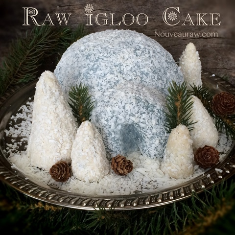
~ raw, vegan, gluten-free ~
This past week we had a pretty darn good snow storm. It was breathtakingly gorgeous, as though Mother Nature nestled our house in a snow-down blanket. I can’t remember the last time I have experienced such a volume of snow in two short days. Not only but it was so pristine white with the fluff of down yet looked as smooth as silk. I just don’t know of any other way to describe it.
Bob and I stayed home for three days, soaking up all the quality time being with one another sitting on the couch, watching the snow fall. It was when the idea for the igloo cake struck me.
As I was decorating the cake and spreading the glacier blue frosting on it, I couldn’t help but reminisce over the fond memories of our wedding. After Bob and I had set a date for our wedding, I asked him where he wanted to get married. The first thing that popped out of his mouth was… “on a glacier!” Well, alrighty then… I went to work looking for a glacier to get married on. :) We were living in Alaska at the time, so I was bound to find one.

There was nothing traditional about our wedding. I found the glacier to get married on and we put 28 of our closest friends and family members on an air boat so they could witness our celebration. After we spent the better part of the day hiking around the pristine land, next to the ice, had a BBQ lunch and got ready for the wedding ceremony.
We slid into our wedding attire which consisted of specially made Native kuspuks that were designed for us and our wedding party. For the 28 years that I lived in Alaska, I had always wanted a true kuspuk so it was a dream come true on many levels. The only change we made was that we insisted on using fake furs. And finding those was a journey all in itself :) So I have a “wedding dress” that I can wear every winter until the end of time.
The day was as bright as it could be, the sky, the water, the ice… were all a vibrant glacier blue which made it difficult to sometimes tell where one started, and another stopped. You can see what I am saying by the photo here. It was one of the most serene moments in my life. There wasn’t even one second of stress throughout the whole celebration. My dad, David, married us and trust me… there wasn’t a dry eye to be found.
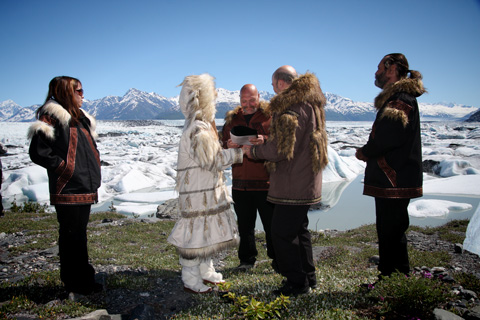
Just after my dad pronounced us man and wife… a glacier behind us calved two times. A loud thunder filled the air and shook the ground. It was the most majestic experience. As a piece of the glacier broke away, it exposed the most insane Crayola crayon blue. For the following three days we all stayed in cabins near the glacier, had music jam sessions, danced, played games and explored. Goodness, I was making a simple cake here and look where it took me… and where I took you… right down memory lane.
I guess, I best get back to the subject at hand here… the Igloo Cake. The cake had an outer brownie layer and nestled within the walls of that is a delicious peanut butter and banana ice cream center. This cake goes together really easily, you just need to account for some freeze time in-between one of the steps. As far as decorating goes, you can make little trees, snowmen… shoot you could build a village! So bundle up, make yourself a cup of tea and create your own Igloo Cake!
 Ingredients:
Ingredients:
6” cake mold (bowl)
Cake batter:
Peanut butter banana ice cream:
- 1 lb frozen bananas slices
- 1/3 cup organic natural peanut butter
- 1/4 cup water
- 1/8 tsp Himalayan salt (if peanut butter is salt-free)
Glacier blue frosting:
Preparation:
Frosting:
- Follow the directions from the link that I provided above in the ingredient list. Make the frosting first because it takes time to firm up in the fridge.
Cake batter:
- Follow the directions from the link that I provided above in the ingredient list. You can use any cake/brownie batter base that you want. I love the idea of having a little heat paired up with the Peanut Butter Banana Ice Cream. Hot and cold?!
Peanut butter banana ice cream:
- Place the sliced, frozen banana, water and salt in a high-powered blender. Blend until it starts to turn soft, add the peanut butter and continue until it reaches a soft-serve ice cream stage.
 Assembly:
Assembly:
- Line the cake mold (just a bowl) with plastic wrap; this will help with the removal of the cake when we are ready to do so.
- Press the cake batter inside the mold about 1/4” thick. Bring the batter all the way to the rim of the mold. The excess batter will later be used for the base of the cake, for making the arctic entry for the igloo and any little trees, if desired.
- Pour the ice cream into the cake mold, leaving about 1/4” space from the top. Smooth and place in the freezer for the ice cream to set.
- Once frozen, place a layer of the cake batter on top of the ice cream. This will be the base when we remove the cake.
- To create the arctic entry for the igloo, shape an arch by cutting out a door. Hold it up to the cake mold that you are using to make sure it isn’t too big or small.
- Create the tree shapes by molding the cake batter into a cone. I made several different sizes.
Decorating:
- You can get as detailed and fancy as you want. For today’s creation, I wanted something simple, cold looking, delicious and easy to put together.
- Remove the cake from the freezer and turn it over onto a serving plate. Remove the cake mold and plastic wrap. If it is sticking and the bowl doesn’t want to release, place a warm, wet dishcloth over the bowl. This will loosen the cake from the inside of the bowl.
- Frost the cake, making sure to cover every part. You don’t have to aim for perfection because we are going to cover it with shredded coconut.
- Press the arctic entry frame/door onto the cake and frost. Smooth the seams with your finger tip.
- Press the coconut into the frosting. Once done, return to the freezer while you do the same technique to the trees. The only difference I did with the trees is that I used some white frosting as the base rather than the blue.
- Once you set up your display, sprinkle extra shredded coconut around the base to resemble snow.
- Enjoy and share your creation!
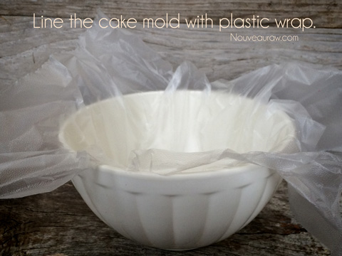
Press the brownie batter around the inside of the bowl. Make it about 1/4” thick.
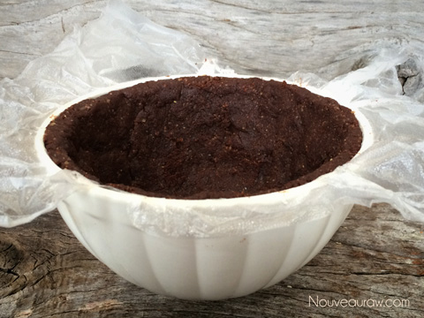
With the extra brownie batter, make the arctic entry arch. Hold it up to the outside
of the bowl to make sure it is the appropriate size for the igloo form.
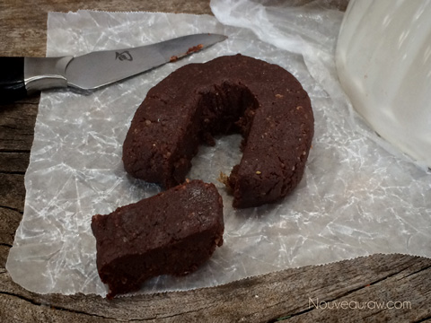
If you wish, create a few tree forms of all different sizes.
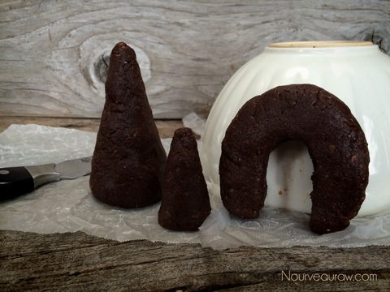
Make the ice cream and pour into the center of the bowl.
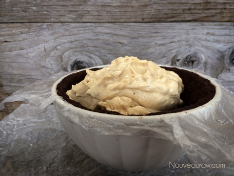
Spread evenly, leaving 1/4” clearance from the edge of the bowl. Place in the freezer.
After completely frozen, use some extra brownie batter and cover the bottom of the
cake. I meant to take a picture of that but… I forgot, I got too excited to start the
decorations and completely spaced it out.
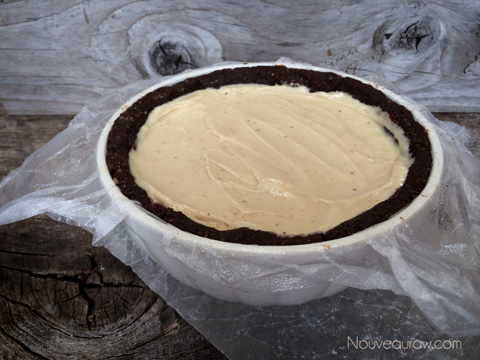
Before you start frosting the cake, make sure that it is good and frozen.
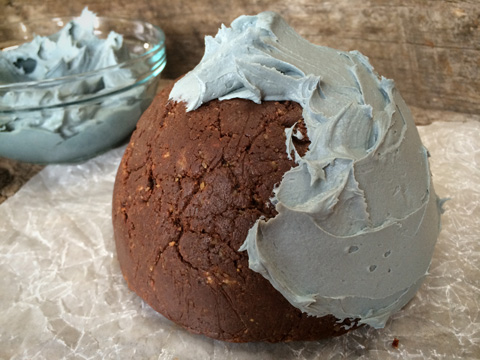
As I was spreading the frosting, the frozen center of the cake helped firm up the
frosting. That was an added bonus. Don’t worry about making it perfectly smooth.
We will be pressed the shredded coconut onto the surface, so it will disguise any blemishes.
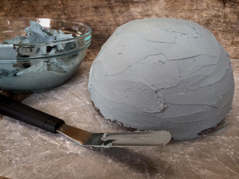
It’s now time to attach the arctic entry arch. As you can see, I had to do a repair job
and spackle my arch back together. haha Press the arch into the frosting.
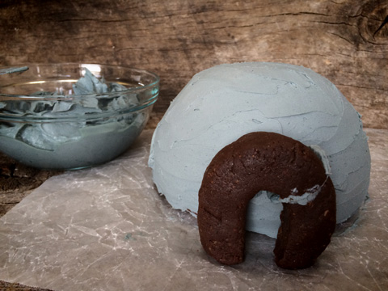
Apply the frosting, entirely covering the arch.
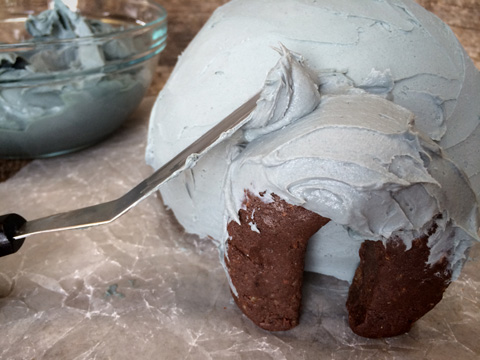
Fill in the crack that joins the arch to the igloo with ample frosting.
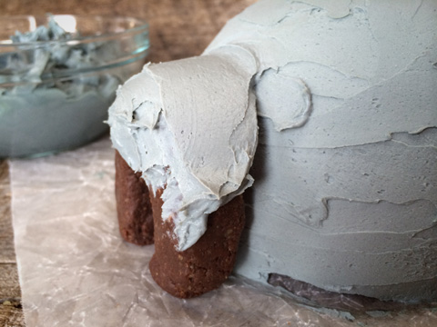
Make sure the whole igloo is completely frosted.
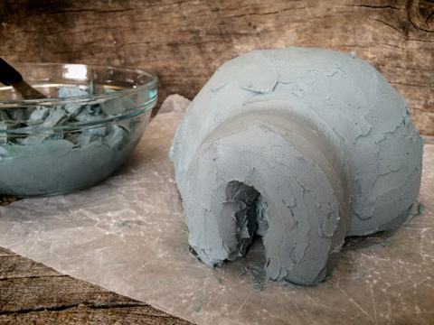
Now it is time to apply the “snow”. Make sure you grind the coconut flakes down
to small bits. We don’t want a furry looking igloo. :) As you sprinkle the coconut
over the igloo, use the palm of your hand to catch and press it to the side of the cake.
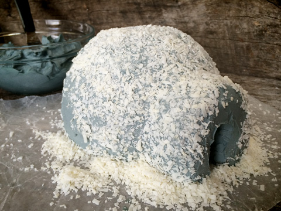
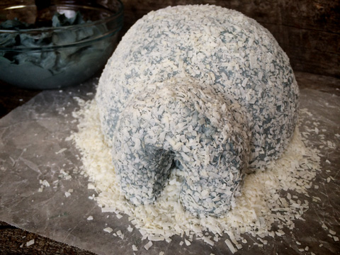
Follow those same techniques when making the trees and/or snowmen
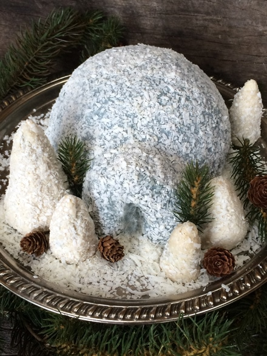
I am hosting an Open House, so you can see what it looks like inside. hehe
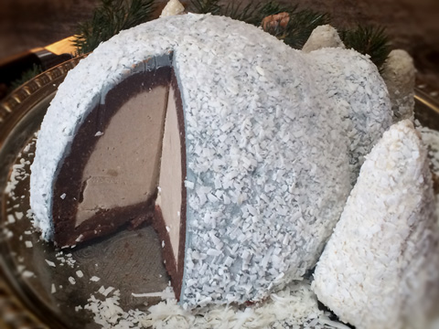
When you are ready to enjoy the cake, let it warm up a tad at room temperature
for about 20 minutes. It helps to run the knife under hot water as well.
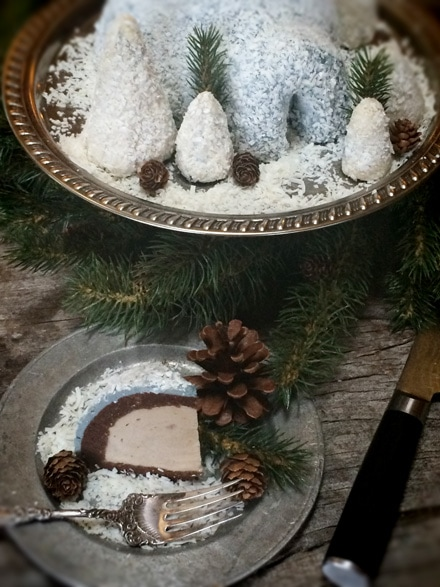
Beautiful layers.
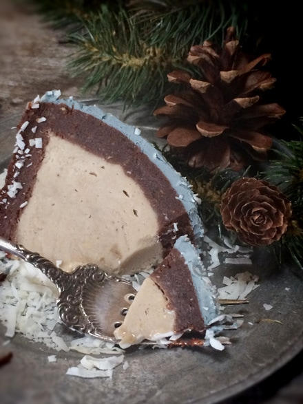
© AmieSue.com